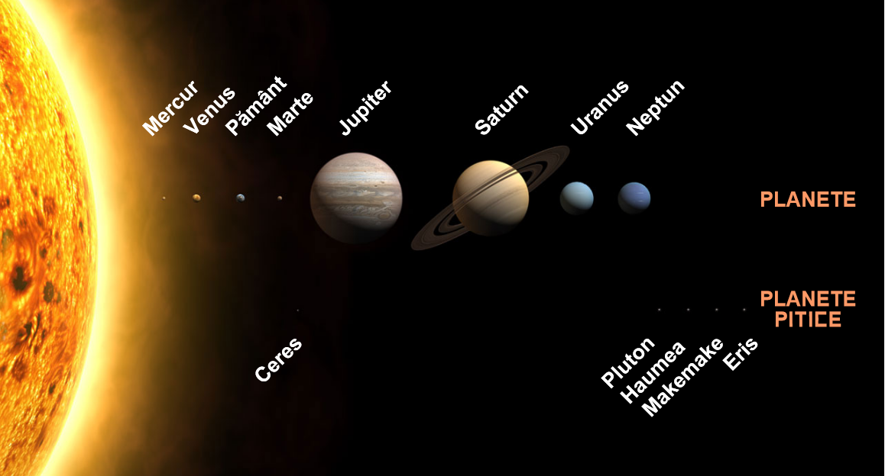
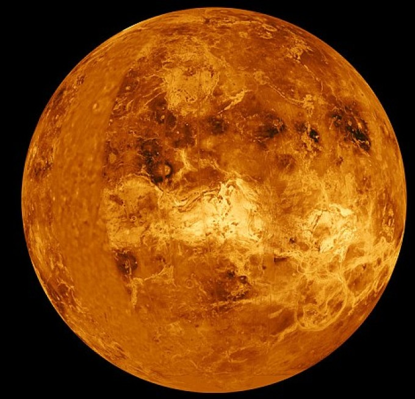
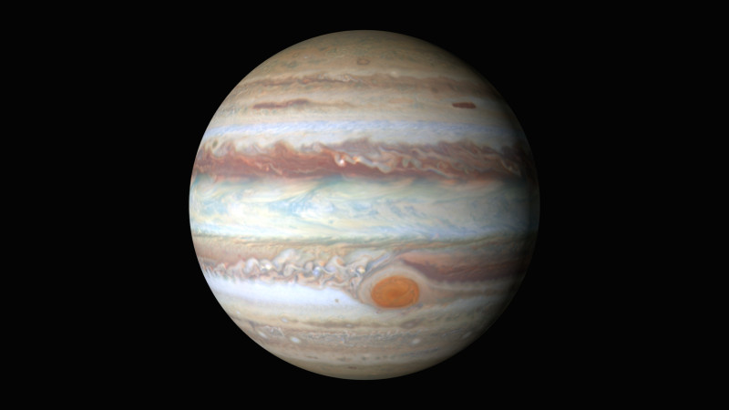
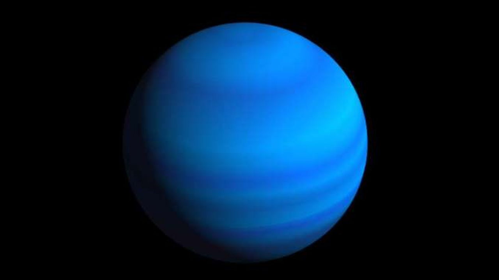
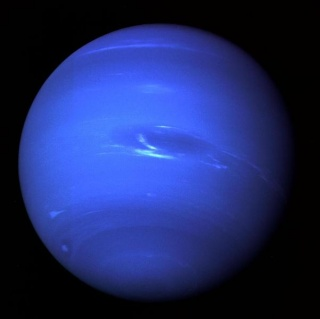

Haideți să descoperim împreună informații interesante despre Sistemul Solar!

Sistemul SolarSoarelePlaneta Mercur

Planeta VenusTerra (Planeta Pământ)LunaPlaneta Marte

Planeta JupiterPlaneta Saturn

Planeta Uranus

Planeta NeptunPluto și alte planete pitice